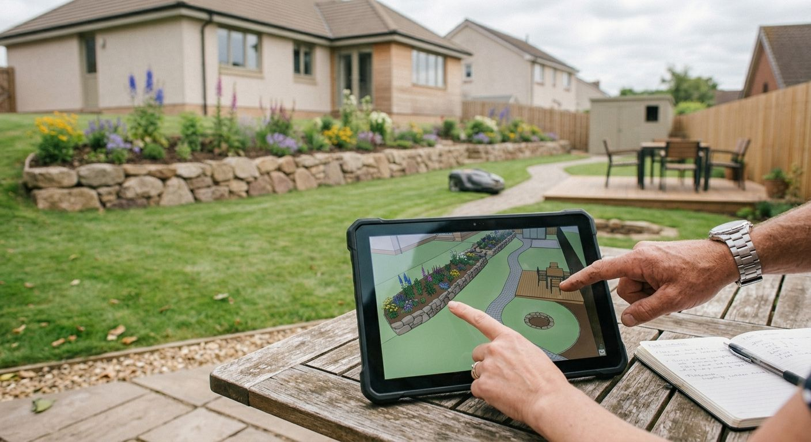
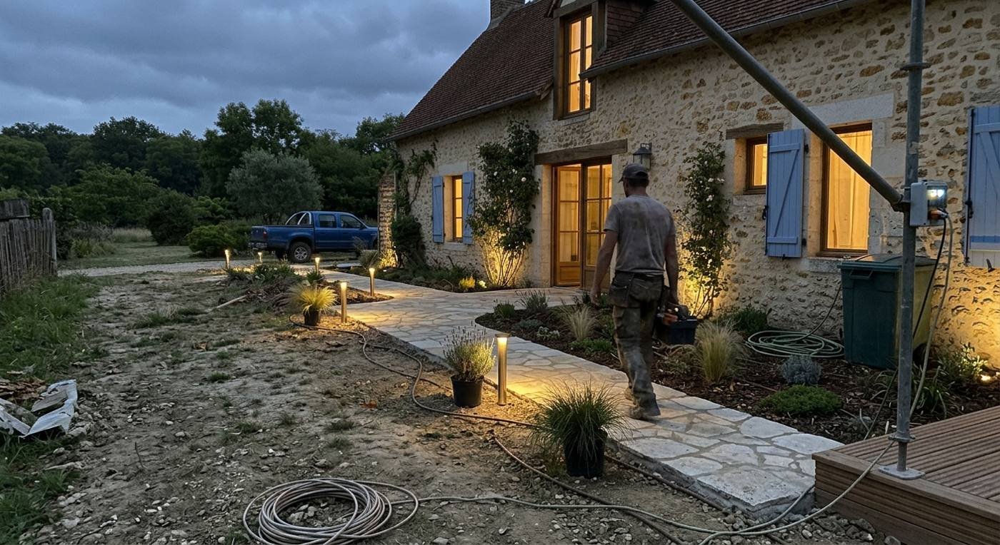
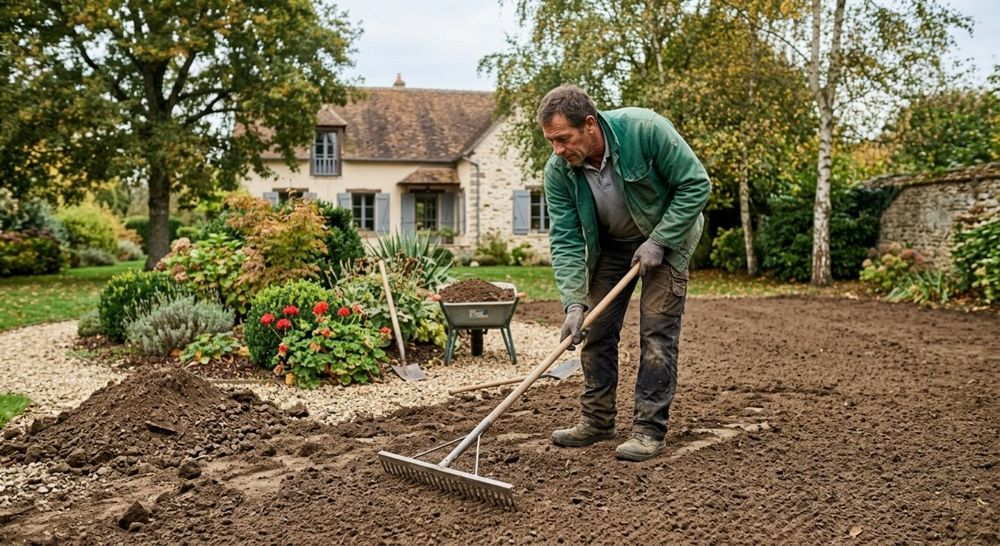
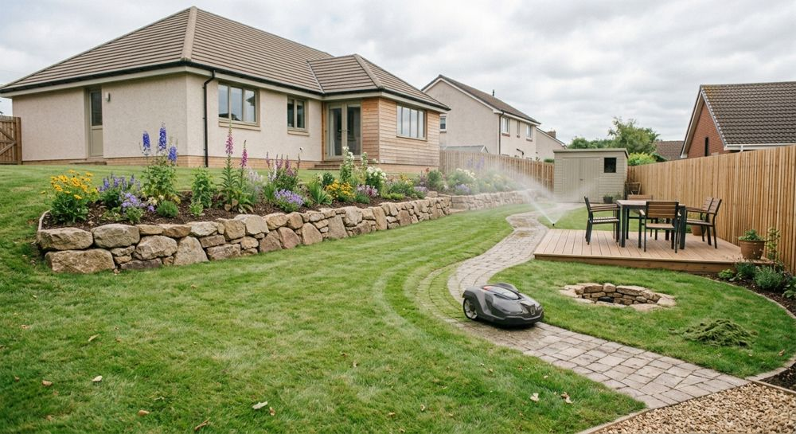
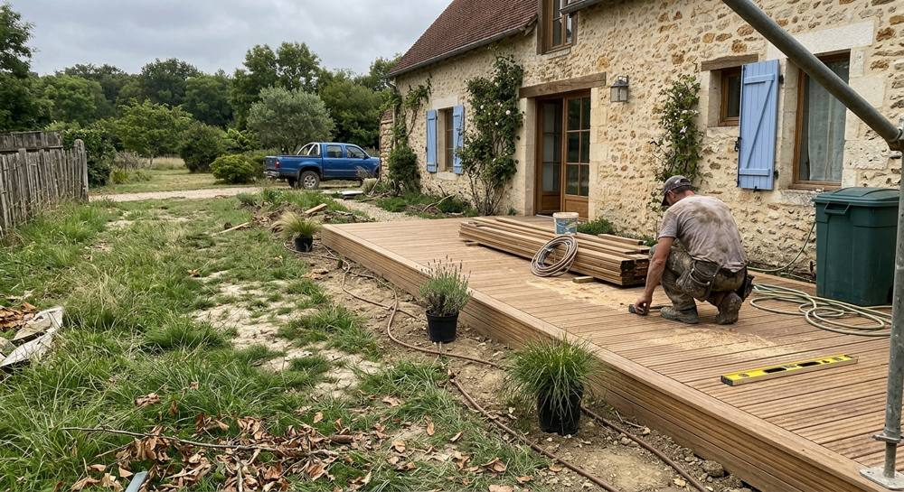
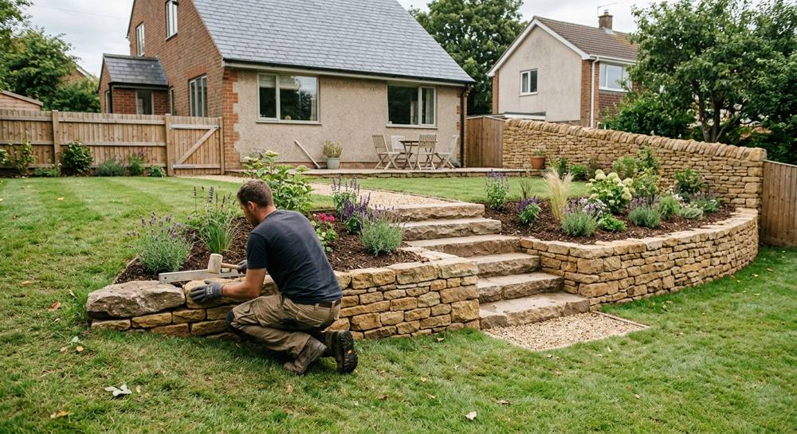
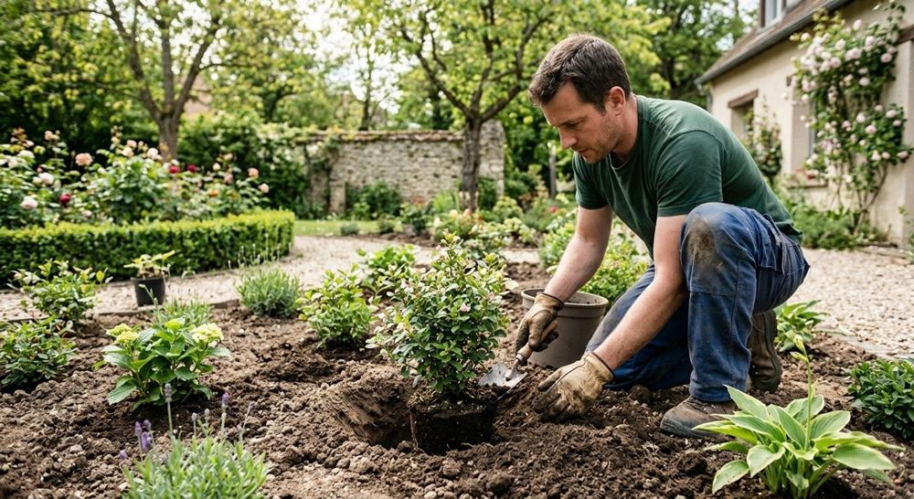
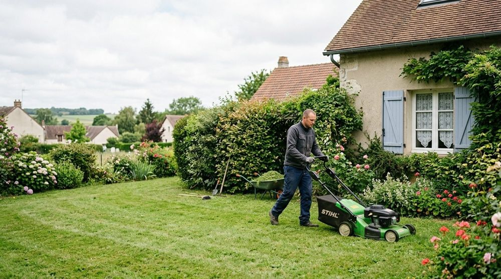
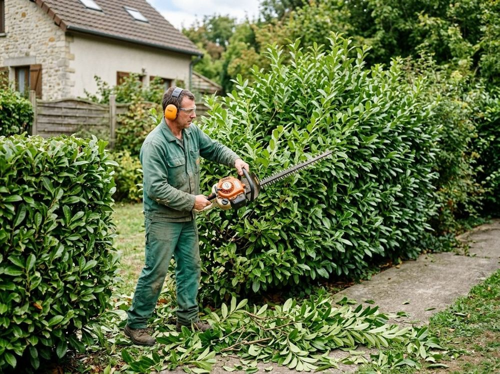

Conception du jardin
- Plan de l'espace et des zones de vie
- Choix des matériaux et des végétaux
- Cohérence avec la maison existante
Un jardin réussi tient à la cohérence de l'ensemble. Voici les domaines dans lesquels Au Cœur de vos Jardins intervient autour de Beynes.



Avant de planter, on dessine : les circulations, les niveaux, les matériaux. C'est là que se joue la tenue du jardin dans le temps.




Arbustes, vivaces et couvre-sols choisis selon l'exposition, le sol et l'entretien que vous souhaitez y consacrer.
Parler de mon projet

Tonte, taille des haies et suivi des espaces verts : un entretien régulier qui préserve le travail d'aménagement.
Demander un devisUn projet d'aménagement suit en général quatre temps. Le détail s'ajuste à chaque chantier.
On parle de votre jardin, de vos envies et de vos usages.
Le projet est dessiné et les choix de matériaux sont arrêtés.
Terrassement, ouvrages en dur puis plantations, dans l'ordre.
Le jardin s'installe ; l'entretien peut prendre le relais.
Terrasse à créer, massif à reprendre, pelouse à remettre en état : décrivez la situation et nous vous répondrons.